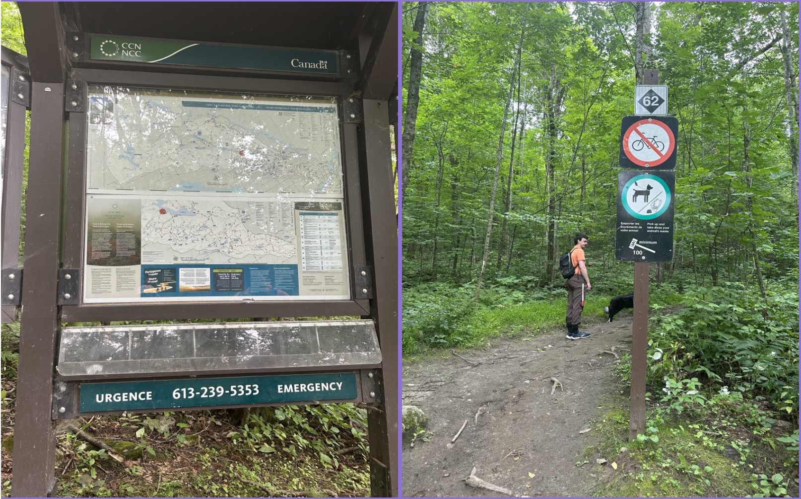

This hike was Greg, Woofy and I’s first REAL hike together!
We’ve been on hundreds of walks but this was the first
through the forest, long hike.
The drive to the trailhead was about 40 minutes from our apt in Ottawa.
When we got there, we payed for parking and hit the trail around 9:40.
It only let us pay for 2 hours, which is strange considering the trail
said it was supposed to take 2.5 hours. We didn’t get a parking ticket
anyways.

The hike was ALOT of uphill. I have bronchitis right now,
and probably shouldn’t have been hiking, but I felt fine yesterday
so didn’t think anything of it, and was very out of breath most of the hike. Greg was less then impressed, but we made it through and it was worth it!
There were lots of streams, waterfalls and rocky
bridges to cross. And mud. Lots of mud. We also saw tons of
interesting fungi and mushrooms. Woofy loved the water and mud.
He actually refused to drink water from the dish we brought,
preferring the running water of the waterfall.

We passed more people than expected for a Saturday morning, but
everyone was super friendly and said hi or bonjour to us in passing.
There was so many people running this trail! I could never.
There were several lookouts, the first one being my favourite,
but the last one was also pretty magical.

We really didn’t see any animals in the trail, other than dogs.
Not even chippys or squirrels!? That was a surprising change for me as
there tons on the trails I work on everyday. Maybe it’s the incline.
We got back to the parking lot at 12:15, making our hike a total time of
2h35m. We walked a total of 8.95 km, with a total incline of 314m,
according to Greg’s Apple Watch.
This hike was a workout! Would definitely do it again though,
hopefully in the fall to see the trees change color!!
Happy Hiking Friends!